Start Exhibition
for start
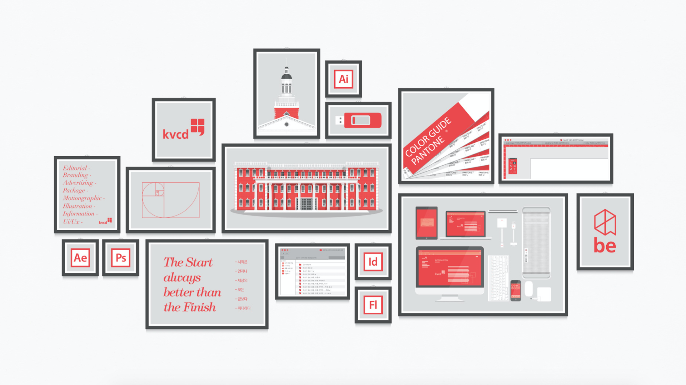
Details
졸업전시회가 끝이 아니며 새로운 시작이라는 의미와, 보일 시, 지을 작이라 는 한자를 사용하여 작품을 보인다는 뜻의 중의적 의미를 담고 있다. 전시회 의 총체적인 브랜딩과 어플리케이션을 제작하였으며, 앞으로의 시각디자인과 전시회의 아이덴티티로 쓰일 예정이다.
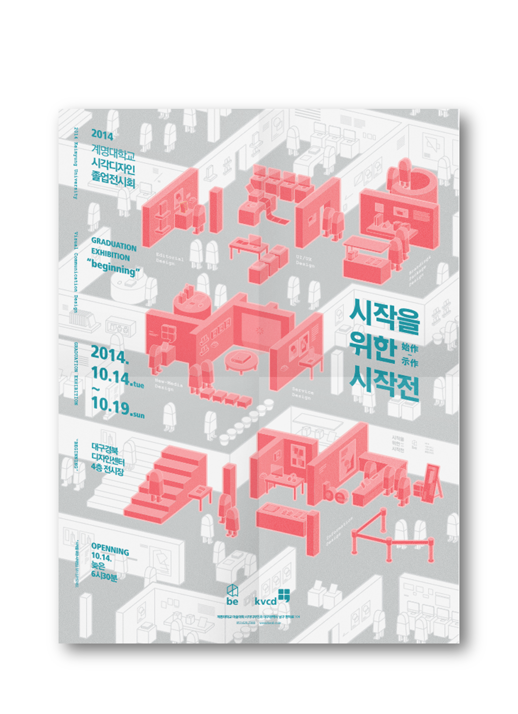 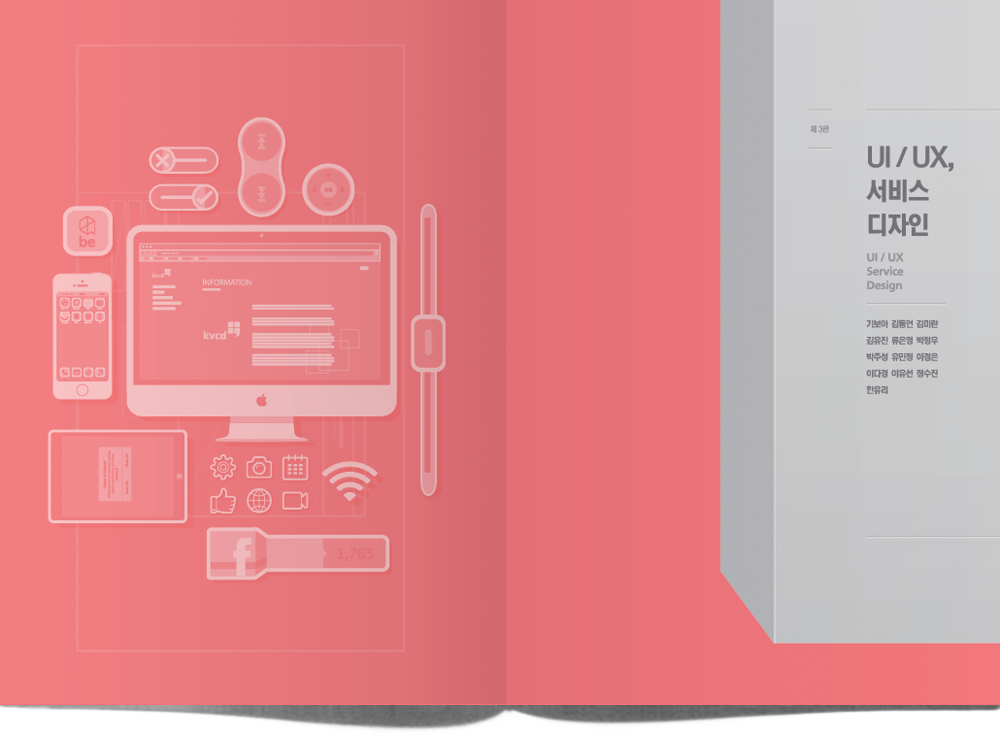 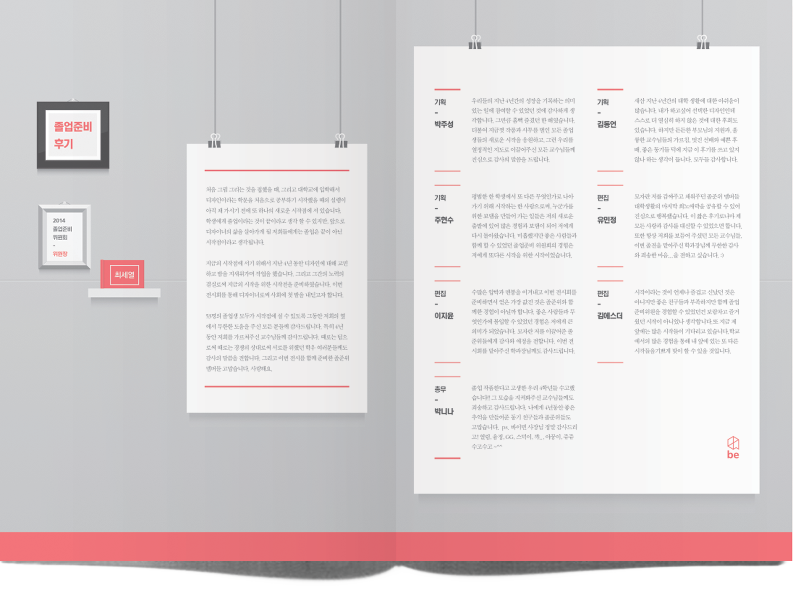 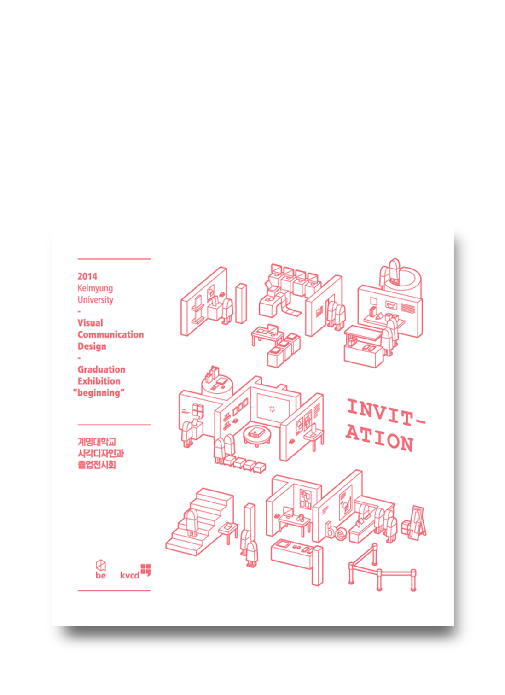 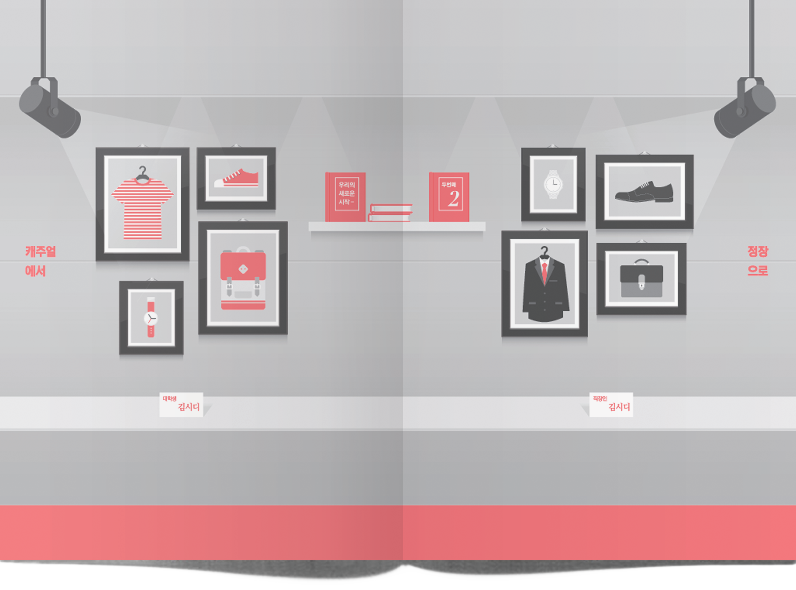Details
졸업전시회가 끝이 아니며 새로운 시작이라는 의미와, 보일 시, 지을 작이라 는 한자를 사용하여 작품을 보인다는 뜻의 중의적 의미를 담고 있다. 전시회 의 총체적인 브랜딩과 어플리케이션을 제작하였으며, 앞으로의 시각디자인과 전시회의 아이덴티티로 쓰일 예정이다.
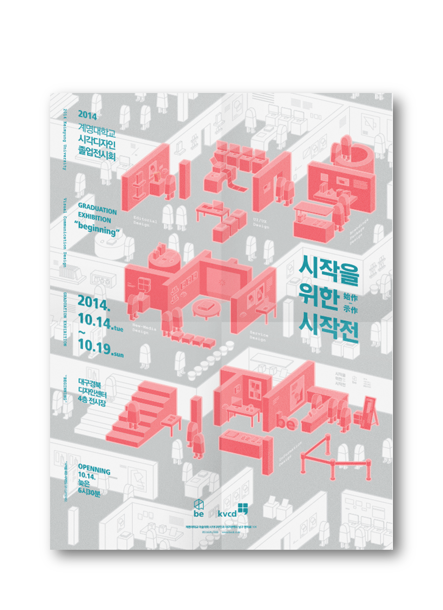 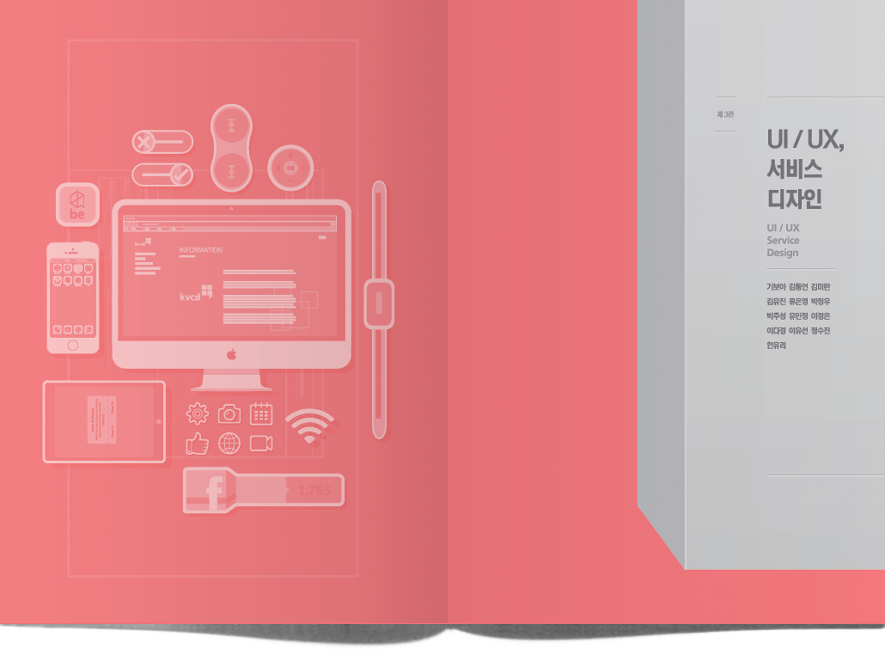 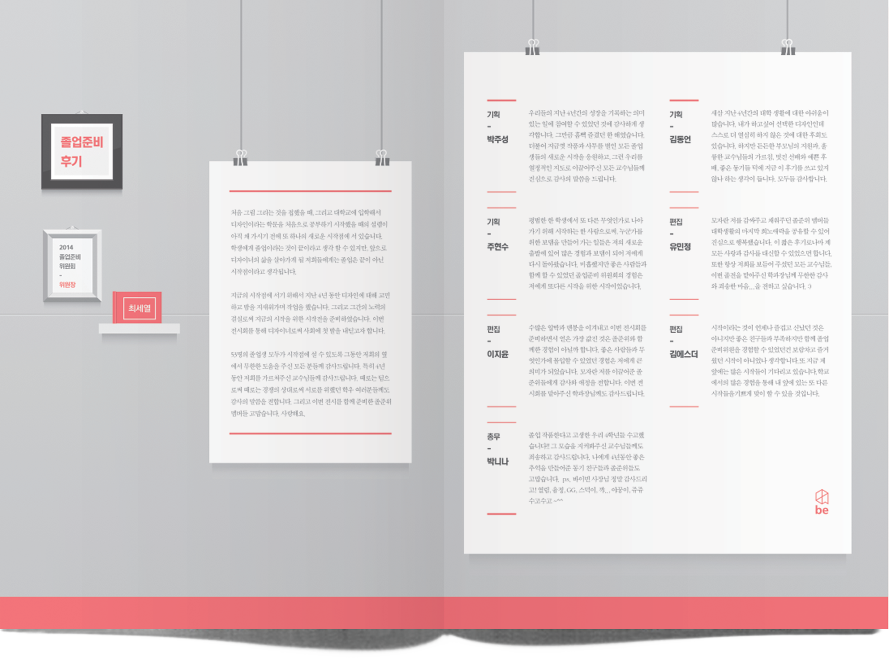 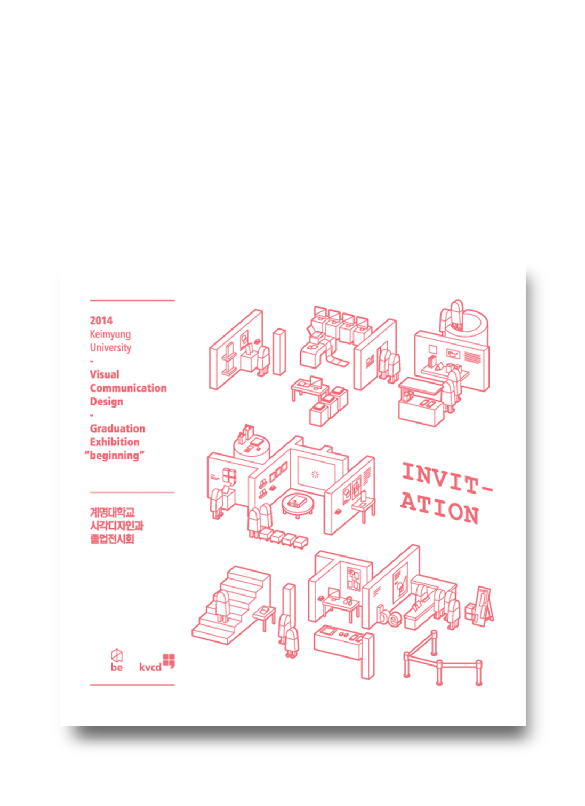 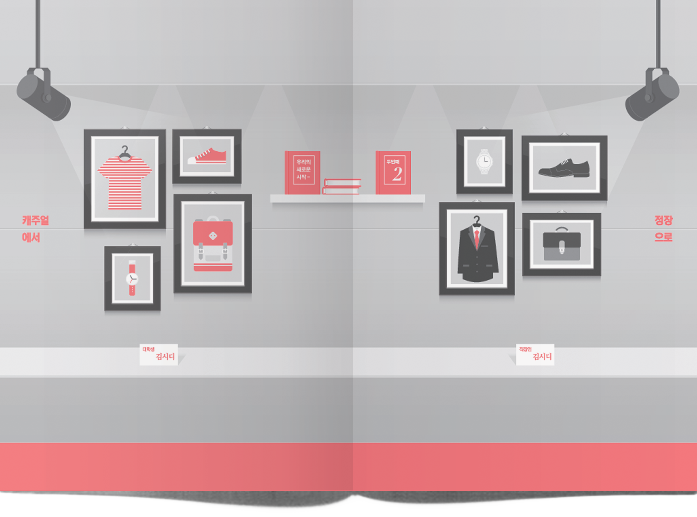